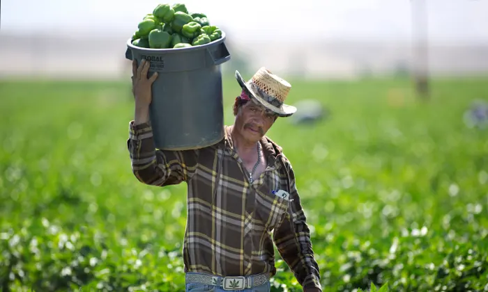

About Us
We are a small business specializing in organic, locally grown foods. Our humble beginnings started in the late 2000s as a small fruit farm in the San Diego countryside that was brought by our founder after returning home from Afganistan. It eventually prospered enough to have divisions and food trucks over Southern California. We collaborate with farmers, grocery stores, city officials, and charity organizations to provide the people of California and perhaps beyond the freshest organic foods that nature can provide.
Our mission is to provide fresh and healthy food options, including organic, made to order, fruit drinks and fruit bags, to the local population and to tourists visiting the coastal areas. we prioritize sustainable and environmentally-friendly farming practices. Our team of experienced farmers carefully tend to each and every fruit tree to produce the best possible yield.
If you have any questions, feedback, or business proposals. Feel free contact us or visit our storefront in Carlsbad! We look forward to hearing from you.
Contact Us
700 Pine Ave.
Carlsbad CA 92008-2427
USA
Email: bountifruits@email.com
Phone Number: +1 (760) 2070-2300
PO BOX 180 (From 180 To 357), Carlsbad, CA, USA